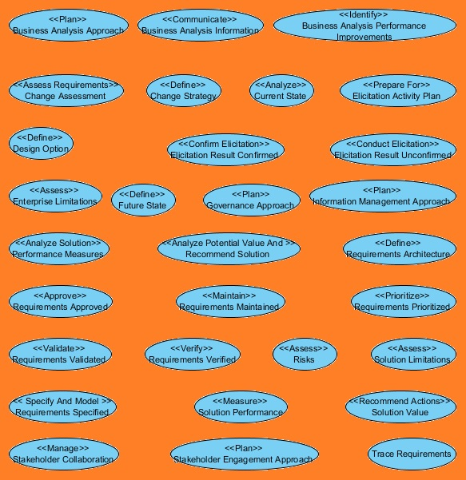
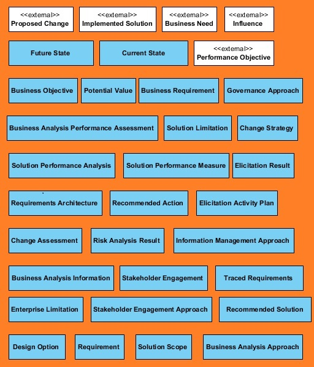
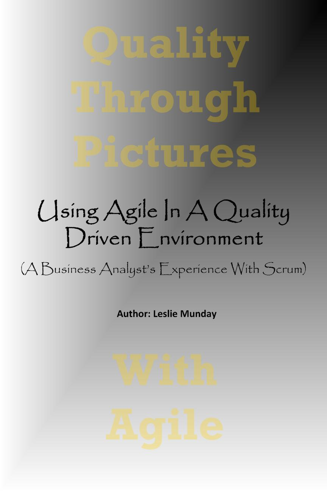
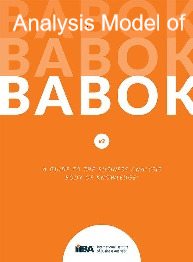
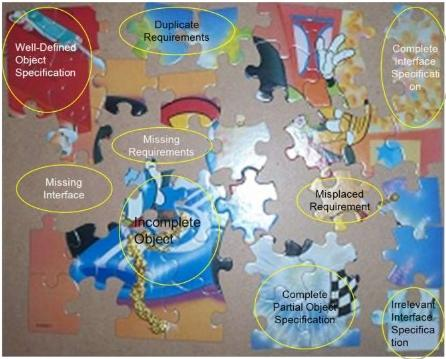
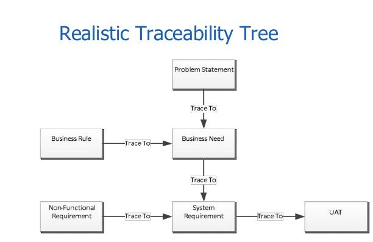
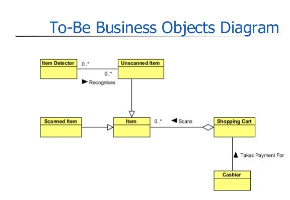

Articles I have published
This page contains links to articles that I have published to various business analysis sites and to linkedIn.|  | BABOK Model Overview Clicking on the image opens a document that contains an overview of the BABOK model. I created this model to capture the information in the BABOK in an unambiguous and consistent manner. The model can be used to display graphical reoprts of relationships between any of the components in the BABOK, where a component is a task, input or output, technique, stakeholder, guideline or tool. |
|  | BABOK Artifacts Clicking on the image opens a document that maps BABOK tasks and elements to analysis artifacts and their attributes. The intention of this article is to identify and specify the artifacts listed in the BABOK. These artifacts are listed within the Outputs section of the BABOK tasks. Outputs are described by a paragraph of text within each task. In this article I attempted to expand on these descriptions by adding detail to their content. |
BABOK Recommendations Clicking on the image opens a document containing a number of recommendatins for improving my understanding of the BABOK. Let me know what you think or if you have any additions to these suggestions. |
|
 |
Agile Through Pictures Clicking on the image opens a presentation containing an overview of the Quality with Agile process. |
|  | Using Agile In A Quality Driven Environment Clicking on the image opens a PDF document containing an overview of my book. |
Analysis Through Pictures Clicking on the image opens a copy of my book that can be downloaded for free from lulu.com. |
|
|  | Model of BABOK Version 3 The Business Analysts Body of Knowledge is a guide to business analysis, which includes standards, guidelines, tools, activities, techniques and core competencies for business analysts. Version 3 was released in 2015 and expands the scope of business analysis, providing essential direction and support for practitioners in areas such as agile, business intelligence, information technology, business architecture and business process management. There is a wealth of information contained within this book. It contains a framework of tasks, techniques, guidelines and artifacts, but it is organized in a manner that it makes it difficult to extract only the information that is needed for a specific situation. Clicking on the BABOK cover image will open a web page which organizes the content of BABOK into a list of artifacts and the techniques, activities, workers, tools and guidelines that are associated with that artifact, allowing the reader to view only the information relevant to their current situation. A presentation containing an overview of this work is located here. |
|  | Analysis of a Jigsaw Puzzle Clicking on the jigsaw puzzle image will open a presentation that I use to introduce readers to the benefits and complexity of requirements analysis . |
|  | Requirements Management and Traceability Clicking on this image will open a presentation that I delivered to the IIBA in September 2015, about requirements traceability. |
|  | Shopping Expedition Part 1 Clicking on the business objects image will open part 1 of a multi-part series of presentations about improving the average shopping process. This presentation describes a business model of a typical shopping expedition and presents ideas for improving the process. |
 |
Shopping Expedition Part 2 Clicking on the class diagram image will open part 2 of a multi-part series of presentations about improving the average shopping process. This presentation describes a logical model for systems that could be used to improve the shopping process. |